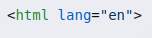
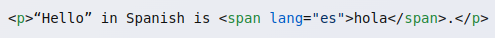
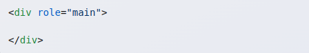

Screen Reader Tutorial: Designing for Screen Readers
Welcome! The following tutorial aims to educate you in the correct way to design with Screen Reader usability in mind.
What is a Screen Reader?
Screen readers are software that enables those who cannot easily see the screen to access information on computers and smartphones. The technology either reads the screen aloud through the use of text-to-speech (commonly abbreviated to TTS) or converts it to Braille.
What can screen readers do?
Screen readers convert the information given on a website into information that can be used by people who can't see the screen properly. Screen readers convert into the two following formats:
- Text-to-Speech
- Braille (only if the user posesses a Braille tactile reading pad)
Not only can screen readers read the user's screen, but can also be tailored to the user’s actions with automation through a process called scripting. Scripting is the ability to write programs that automate tasks for ease of use and better accessibility. These scripts can be customized by the user, or obtained from other users, as scripts can be shared. There are many active communities that revolve around sharing scripts with others in order to help everyone get the most use out of their screen reader.
Screen readers typically support multiple languages, so they can switch to a different language as long as that language is encoded within the site’s metadata.
Reading text isn't the only thing screen readers can do: they can also describe pictures and tables so that the user can understand the context of those elements on the page as well. However, webpages need to be designed properly with the correct tags and ARIA used in order for screen readers to function correctly.
What do Screen Readers Need to Work Properly?
Screen readers read the HTML files of websites directly in order to interpret the content to be given to the user. Here are some of the ways you can design your website to be more accessible for screen readers.
Screen readers use the tags in the HTML code in order to understand the content and sections of the page. So, in order to be sure that screen readers can understand the various elements within your webpage, you need to be sure to use semantically rich tags.
Semantically rich tags are tags that self-explanatory, meaning that the name of the tag itself is enough to understand what it is. For example, <img> is an image, <p> is a paragraph, and <table> is a table, they all have names that explain their purpose. Tags like <span> and <div> aren't semantically rich, it isn't clear what the content contained in these tags are. You can use ARIA to inform screen readers of their context, and we'll cover ARIA later in the tutorial.
There are many other reasons as to why it is important to use proper tags. Screen readers are able to jump between tags of the same type quickly to allow for easier navigation. For example, when a screen reader reaches a <h2> heading, it'll allow the user to jump between every <h2> heading on the page.
Certain HTML tags activate specific features of screen readers. For example, screen readers will change its controls to allow the user to navigate a table when it detects the <table> tag. Because of this, it's important to always use the correct tag for specific elements. If an element such as a table is contained within a <div> tag, the screen reader won't know how to process the content. Screen readers can also be set to read the <title> tag's contents when a page loads so the user knows what page they're on.
While screen readers are capable of supporting multiple languages, the screen reader needs to know from the HTML tags what language the content is written in. This is stored within the <html> tag. For example, the following tag sets the established language to english:
For scenarios where specific sections are in a different language, the lang attribute can be placed inside of any tag:
ARIA Roles
ARIA roles are attributes that are placed inside of tags that aren't semantically rich in order to tell screen readers what their function is. ARIA roles can be placed inside of <div> and <span> tags using the role attribute. The primary ARIA roles are form, main, navigation, and search. Here is an example of an ARIA role in HTML:
Keep in mind that only tags that are not semantically rich should have ARIA roles used, such as in <div> and <span>.
Accessible Design Practices
When writing the text content of the webpage, try to make the first sentences and headings of each section be descriptive of the content within the section. This is because when users that use screen readers skim through a webpage, they'll often only read the first sentence or two of each section, or even just the heading to see if the section is relevant to them, so it's important to make the first sentences and headers descriptive.
It is also important to make sure that certain elements have alt text descriptions added for screen readers. Elements like icons, images, videos, and embeds should all have alt text that describes the element. This is so users can use their screen readers to get a description of what an image is, what a video shows, etc. Screen readers will automatically read the alt text description of an element. However, if no alt text is provided, the screen reader will read the filename of the image or video instead. In some cases, screen readers will ignore the element completely, depriving the user of necessary information.
Punctuation is also important for screen readers, since screen readers will pronounce words and phrases exactly as they are written. Using proper grammar and punctuation will not only make your website more readable, but it'll make your website more accessible to those using screen readers as well.